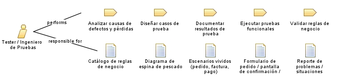

| Role: Tester / Ingeniero de Pruebas |
| |
 |
| Profesional encargado de diseñar, ejecutar y documentar pruebas para asegurar que el sistema funcione correctamente y cumpla los requisitos del negocio. Valida funcionalidades como toma de pedidos, generación de factura, y actualizaciones de inventario. |
|
Relationships
 |
| Primary Performs |
|
| Modifies |
|
Main Description
| Profesional encargado de diseñar, ejecutar y documentar pruebas para asegurar que el sistema funcione correctamente y
cumpla los requisitos del negocio. Valida funcionalidades como toma de pedidos, generación de factura, y actualizaciones de
inventario. |
Staffing
| Skills | Manejo de herramientas, analisis general con pruebas de usabilidad y comprobacion de logica. |
|